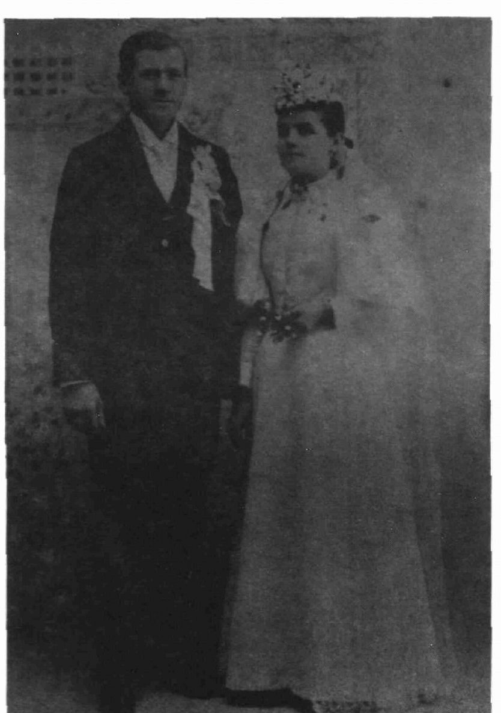
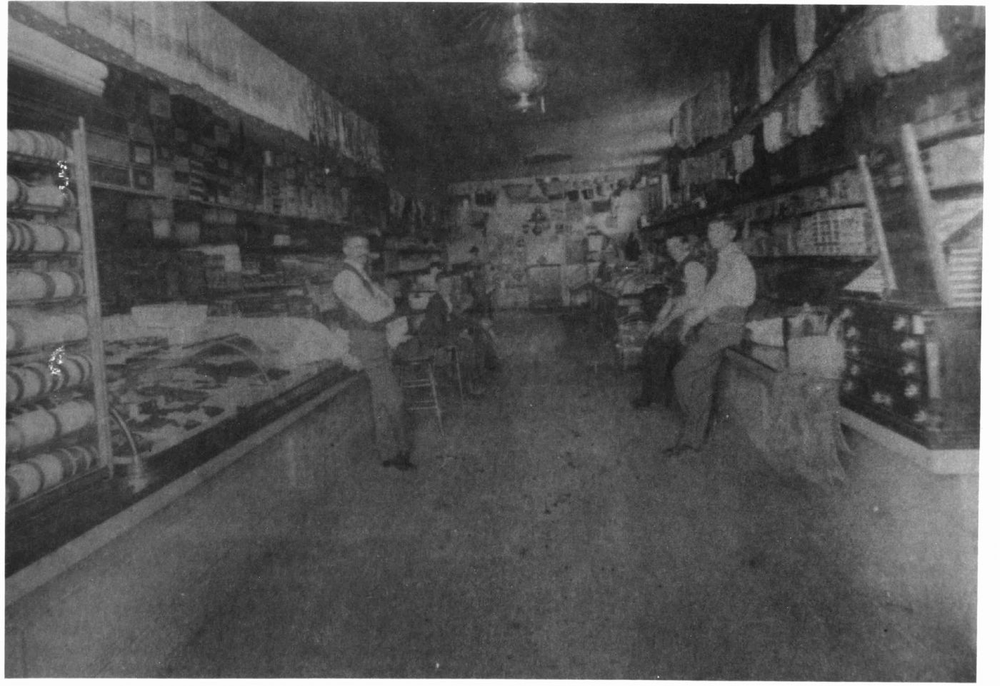

Son of Peter Kastl · Peter’s branch
Charles Anton Kastl
1872–1961
Show in the family tree
 Sons of Peter: Seated L to R are Joseph and Frank. Standing L to R — Joseph Sedlacek (cousin), Thomas and Charles.
Sons of Peter: Seated L to R are Joseph and Frank. Standing L to R — Joseph Sedlacek (cousin), Thomas and Charles.p. 15

Charles Kastl — Barbara Kasper 1895p. 22

1892 — Store in Malmo, Nebraska. Charles, Thomas, and Joseph sons of Peter.p. 23
What the book records
| Also written as | Charles Kastlp. 22As printedCHARLES KASTL (Peter, Thomas, John, John, Andreas) born 6 January 1872 — p. 22
|
|---|
| Born | 6 January 1872p. 15 p. 22As printed6. CHARLES (b) 6 Jan. 1872, (d) 31 Mar. 1961 (bur) Prague, NE. (m) Barbara Kasper 18 Nov. 1895. — p. 15CHARLES KASTL (Peter, Thomas, John, John, Andreas) born 6 January 1872 — p. 22
|
|---|
| Married | Barbara Kasper, 18 November 1895p. 15 p. 22As printed6. CHARLES (b) 6 Jan. 1872, (d) 31 Mar. 1961 (bur) Prague, NE. (m) Barbara Kasper 18 Nov. 1895. — p. 15He married Barbara Kasper 18 November 1895. — p. 22
|
|---|
| Died | 31 March 1961p. 15 p. 22As printed6. CHARLES (b) 6 Jan. 1872, (d) 31 Mar. 1961 (bur) Prague, NE. (m) Barbara Kasper 18 Nov. 1895. — p. 15died 31 March 1961, and was buried at Prague, Nebraska. — p. 22
|
|---|
| Buried | Prague, Nebraskap. 15 p. 22As printed6. CHARLES (b) 6 Jan. 1872, (d) 31 Mar. 1961 (bur) Prague, NE. (m) Barbara Kasper 18 Nov. 1895. — p. 15died 31 March 1961, and was buried at Prague, Nebraska. — p. 22
|
|---|